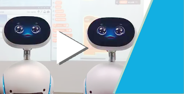

想用Scratch在Zenbo上面恣意操作嗎？照過來就對了!
如果 Scratch 也可以控制 Zenbo, 那該有多好啊! 是的, 我們聽到了. 用了 Zenbo Scratch, 你就可以將 Zenbo納入你的無限想像空間, 讓 Zenbo成為你故事的主角, 吸引眾人的目光.

- 
影片
相聲：子非魚安知魚之樂
使用Scratch操作兩台Zenbo說相聲！來看看他們的互動吧！
-

影片
遊戲：足球實況播報員
玩足球遊戲時, Zenbo會在旁邊播報實況喔！來看看怎麼跟Zenbo一起玩！